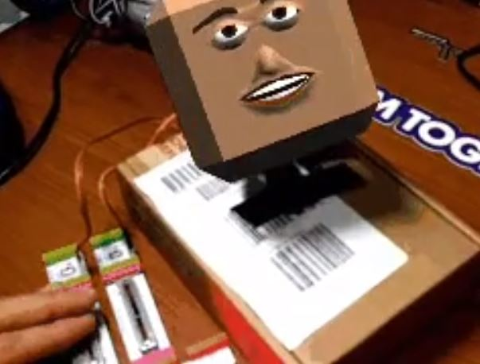
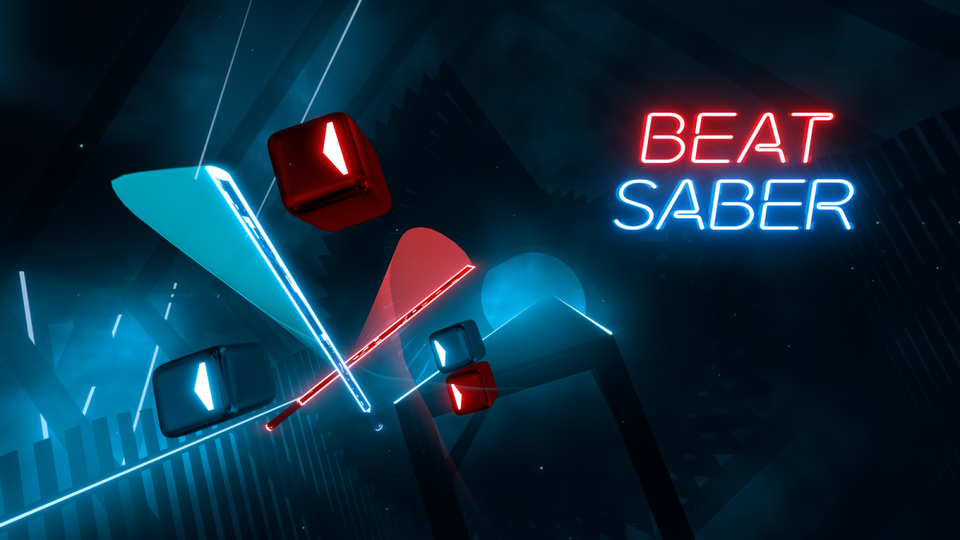

Voordat ik aan challenge 1: AR/VR ben begonnen, heb ik eerst wat onderzoek uitgevoerd. Tijdens het onderzoeken heb ik allerlei leuke en interessante projecten gevonden. In de eerste instantie leek de onderzoekfase mij een nutteloos. Echter, na het daadwerkelijk uitvoeren van de onderzoek, is mijn beeld van AR en VR erg verbreeedt. Ik heb namelijk unieke vr en ar projecten gezien, waar ik nooit aan zou kunnen denken. Hieronder zijn een aantal voorbeelden van de projecten dat ik heb opgezocht.
Dit project is gemaakt door Ron Dagdag. Hier zie je een Augmented Reality project waar de hoofd beweegt en praat! Erg cool. De project is gemaakt met softwares als Unity, Arduino IDE, CylonJS. Raspberry Pi 2 Model B, littlebits arduino, servos (Tower Pro MG996R) en littleBits Gizmos & Gadgets zijn de hardware dat voor dit project gebruikt zijn. Bij dit project is te zien dat de hoofd meebeweegt als de box naar boven, link of rechts wilt kijken. Het is in principe een robot dat zichzelf beheerst door willekeurig de ogen te bewegen. Wat ik leuk vind aan dit project is dat het een simpele project is, maar ook weer niet. Het gebruikt namelijk erg weinig onderdelen, maar dit zou ik bijvoorbeeld niet zelf kunnen maken. Ook vind ik het een heel raar project, waardoor het mij erg geinig lijkt om zoiets bijvoorbeeld zelf te maken. Het lijkt mij namelijk geinig om dit bijvoorbeeld met een Pokemon karakter te maken. Een 'levende' pokemon! Het doet niet veel, maar het is erg leuk en interessant om te zien dat het bepaalde gezichtjes maakt. Alsof het emoties probeert te uiten. Hieronder is een link te vinden met de stappenplan en video's.  Link project
Dit project is een game dat uit is gekomen op Oculus Quest, Playstation 4 en Micorsoft Windows. Beat Saber is een ritmespel, waarmee je op de ritme van muziek, blokken met snijden. Dit doe je dus met twee zwaarden in de vorm van een 'lightsaber' van Star Wars. Hier heb je dus een blauwe zwaard en een rode, waarmee je met de juiste hand, de juiste blok moet snijden. Dit spel speelt zich natuurlijk af in een Virtuele omgeving. Dit spel kan je vergelijken als de spel Guitar hero, maar dan in een virtuale omgeving en in plaatst van een gitaar, hoor je de blokken te slaan/snijden. Dit spelletje spreekt mij aan, omdat de visuele omgeving erg mooi uitziet. Het ziet er namelijk Neon achtig uit, wat mij erg aanspreekt. Beat Saber ziet er erg futuristisch uit en sci-fi thema's vind ik erg interessant. Het is een erg simpel spel dat een beetje op Guitar Hero lijkt. Daar moest je namelijk ook een goede timing hebben en muziek maken. Ook lijkt dit spel op een soort Nintendo Wii. De principe is namelijk hetzelfde, maar de enige aanpassing is dat dit in een virtuele omgeving plaatsvind. Dit kan namelijk de toekomst zijn voor Nintendo. Je kan bijvoorbeeld de 'minispelletjes' van Wii, als Golven, tennis etc., ook in een VR omgeving plaatsen, wat toch een wat realistische omgeving geeft. Dit is perfect voor nu bijvoorbeeld met de Corona crisis. Dan kan je misschien toch je vrienden/vriendinnnen zien en leuke activiteiten uitvoeren. Met vrienden afspreken in een virtueel omgeving. Of een date in een virtueel omgeving. Dat klinkt toch veel beter dan een date met videobellen.  Link project
Door de opdrachten is mijn kennis en ervaringen erg verbreedt. Ik heb namelijk VR en AR projecten gezien, waar ik nooit aan zou kunnen denken. Normaal had ik gedacht dat VR (en AR) niet interactief was en dat je er alleen kon rondlopen. Nu heb ik gezien dat dit niet het geval was. Je kan namelijk veel meer dan ik verwacht had. Door het onderzoeken van VR & AR projecten heb ik ook een aantal eigen ideeën gekregen, wat ik misschien in de toekomst zelf kan realiseren. Erg leuk dus. De uiteindelijke product dat ik heb opgeleverd vind ik erg leuk. Ik vond het namelijk erg leuk om te maken. Echter, wist ik niet precies in wat voor tool ik het wou maken en wou ik zowel aframe als Unreal Egine meer verkennen. Hierdoor en door tijdsnood, heb ik een niet al te geweldige eindproduct, maar toch meer kennis verkregen van beide technieken. In de eerste instantie dacht ik namelijk dat ik mer Unreal Engine verder ging, totdat ik meer informatie over Aframe heb gezocht. Hierdoor vond ik aframe ook echt gaaf, waardoor ik dus meer over aframe te weten wou komen. Ik ben in principe erg tevreden over de gehele opdrachten, omdat ik toch meer van beide technieken heb kunnen zien, ipv alleen 1 techniek te verkennen. Mijn ervaring bij het gebruiken van aframe was erg positief. Ik vind dit een handige tool om VR omgevingen te bouwen. De code is echter toch best pittig om te begrijpen en toe te passen. Ik merk namelijk dat ik bepaalde dingen wou doen in de challenge, maar niet kon doen doordat ik weinig ervaring met Javascript heb. De Unreal Engine tutorials vond ik best leuk om te doen. Vooral dat je mini spelletjes maakt is echt tof om te maken. Echter, vind ik het gebruik van nodes erg vaag. Ik denk dat dit erg wennen is en een kwestie van veel gebruiken. Maar hierdoor vraag ik mij wel af of coderen op den duur dan niet makkelijker zou zijn. Met coderen zit, neem ik aan, een bepaald logica in wat je uiteindelijk leert en misschien wel nuttiger is dan het leren van nodes.